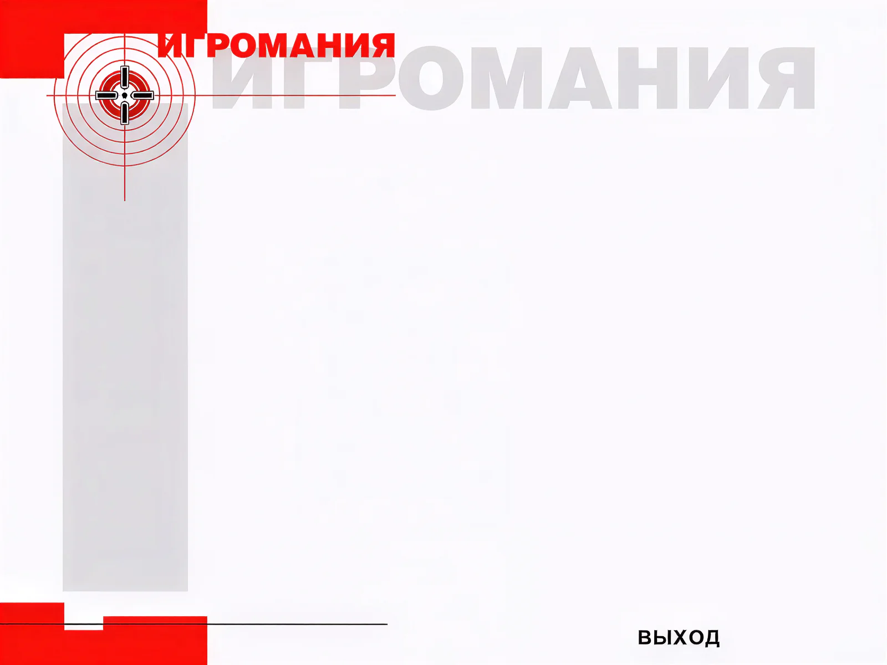
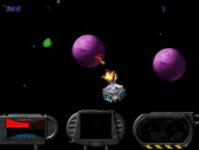
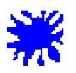
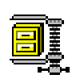
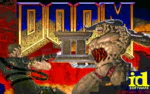

Все темы находятся на диске в директории THEMES. Название каждого из файлов достаточно красноречиво говорит само за себя, и вы легко сможете найти то, что вам интересно.
Все темы упакованы в архивы. Чтобы установить любую из них, надо развернуть выбранный архив с сохранением полного пути. Большая часть файлов устанавливается в директорию PROGRAM FILES/PLUS!/THEMES, где создают собственный каталог. Если архив без путей, то скопируйте файлы туда самостоятельно.
Некоторые темы устанавливают свои шрифты (в папку WINDOWS\FONT) и новые экраны появляющиеся при загрузке Windows 95 (в корневой каталог на диске C) и при выключении (в папку WINDOWS/SYSTEM). Если Windows 95 на вашем компьютере установлен в другую папку, то эти файлы также необходимо скопировать вручную в соответствующие директории.
Для подключения выбранных вами тем используйте MS PLUS! или программу Free Theme с нашего диска. В меню Edit укажите директорию, где лежат темы - и готово!
После этого, чтобы все изменения вступили в силу, иногда необходимо перезагрузить компьютер.

Free Theme
WinZipВ далеком уже 1994 году особенно до той поры не известная широкой публике компания ID Software выпустила игру с кратким названием DOOM.
С тех пор мир переменился раз и навсегда. DOOMомания охватила широкие массы и некоторое время вообще казалось, что отныне жанр 3D-action станет править бал в игровой индустрии.
Но после выхода второй части игры, ребята из ID почему-то отказались от продолжения серии и переключились на разработку нового творения, Quake.
Однако у DOOM остались множество поклонников, не желающих предавать первую любовь ради нового фаворита. Они настойчиво требовали от ID вернуться "к истокам" или хотя бы позволить другим сделать это.
Некоторое время ID отказывались отдать исходные коды (т.е. графический движок), мотивируя это священным правом авторской собственности. Но фанаты – люди упрямые, они могут и мир перевернуть, если очень захотят и их во-время никто не остановит.
Короче говоря, ID сдались и 23 декабря 1997 года отдали исходные коды на "растерзание", разрешив всем желающим пользоваться ими (правда, при условии, что конечный продукт будет распространяться бесплатно).
Из всех появившихся с тех пор переработок классической игры самым, на наш взгляд, удачным явился проект Legacy of DOOM.
Его авторы – Denis Fabrice и Boris Pereira. Они совершенно справедливо рассудили, что изобретать велосипед – дело глупое, поэтому и ограничились введением в старый добрый DOOM некоторых новых возможностей, сохранив сам игровой процесс в неприкосновенности, за что им огромное и сердечное спасибо.
Прежде всего, теперь в DOOM можно играть не только в разрешении 320x200 (что по сегодняшним стандартам не есть хорошо), но и в 640x480, 800x600 и даже 1200x768.
Далее, появились дополнительные эффекты – прозрачность (теперь заметить призраков стало еще сложнее), возможность немного подпрыгивать вверх (что в корне меняет некоторые элементы игры) и, наконец, теперь вы можете при желании задействовать freelook (т.е. двигать стволом оружия из стороны в сторону и вверх-вниз).
Есть в игре и еще много чего хорошего, но об этом вы сможете подробно узнать из текстовых файлов, составленных самими авторами, которые вы найдете в папке с игрой.
Мы же остановимся только на самом необходимом.
Для установки игры вам надо разархивировать имеющиеся на компакт диске файлы в каталог, куда вы предварительно установили DOOM II (с более ранними вариантами игры текущая версия DOOM Legacy почему-то конфликтует). Далее запустите новый исполнительный файл и в нем уже выставите все настройки (графику, управление и пр.), а про старый Setup.exe можете забыть и даже стереть его вместе с doom2.exe – они вам больше не понадобятся.
Начнем, как и водится, с графики. Хотя в Legacy of DOOM можно играть и из-под Win95, но на самом деле игра работает в DOS. Поэтому вам необходимо проинсталлировать на свою машину драйвер VESA2. Если вы нигде не можете найти этот драйвер, то воспользуйтесь UNIVBE или SMART DISPLAY DOCTOR (есть на нашем диске).
Если ваша видеокарта выполнена на чипсете S3, то вам надо перед каждым сеансом игры запускать маленькую программку S3VBE. Запускать программку надо из командной строки DOS, напечатав s3vbe.exe /install (Эта программа также есть на нашем диске.)
Перейдем к звуку. Звуковой драйвер, используемый Doom LEGACY, не поддерживает General Midi через MPU порт. Поэтому, если у вас есть старая 8-битная звуковая карточка, откройте любым текстовым редактором файл Sound.cfg, находящийся в директории с игрой и там найдите тип своей звуковой карточки и проставьте его. Все необходимые инструкции есть в самом файле Sound.cfg.
Ну и наконец, когда вы захотите подключить к Legacy of DOOM новые карты (а вы, конечно, захотите это сделать), то добиться желаемого результата можно двумя способами.
Первый – подключить карту из консоли во время самой игры. Для этого вызовите консоль (~) и наберите map my1.wad, где my1.wad – название дополнительного файла с уровнем, который вы хотите добавить.
Второй способ – все сделать по старинке, т.е. запустить DOOM Legacy из командной строки DOS с ключом: doom3.exe -file my1.wad
Не забудьте поставить пробел после имени исполняемого файла!
Ну а теперь коды для DOOM (если кто-то забыл, хотя эти коды – святое для всякого уважающего себя игромана, их забывать нельзя просто по определению).
IDDT – показывает всю карту уровня, при повторном вводе показывает всех чудовищ и предметы на уровне. При следующем вводе возвращает карту в первоначальный вид
IDDQD – режим Бога
IDCLIP – дает возможность ходить сквозь стены
IDKFA – выдает полный боекомплект (но без рюкзака) и броню 200 %
IDBEHOLD – выдает предметы:
R – противорадиационный костюм
I – частичная невидимость
V – неуязвимость
A – полная карта уровня
L – усилитель света (очки ночного видения)
S – инъекцию берсерка (восстанавливается здоровье до 100 процентов и появляется возможность убивать врагов кулаками с двух-трех ударов)
IDCLEV плюс номер карты – переносит вас на выбранный уровень
IDMYPOS – печатает ваши координаты
IDCHOPPERS – выдает вам бензопилу
